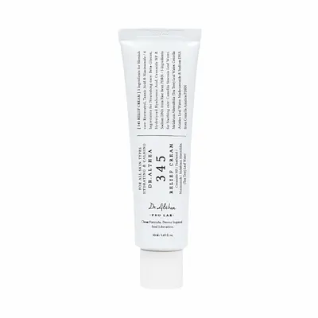

Dr. Althea 345 Relief Cream 50 ml: review al cremei calmante pentru față
Review editorial independent. Produs oferit de
BeautyPanda
Acest material a fost realizat în scop informativ și editorial.
Oferirea produsului pentru review nu înseamnă că articolul a fost
aprobat sau că textul său a fost convenit cu brandul ori cu
vânzătorul.
Informațiile prezentate se bazează pe analiza compoziției, pe
caracteristicile declarate ale produsului și pe datele disponibile
despre ingredientele sale. Acestea nu reprezintă o recomandare
oficială a producătorului și nu înlocuiesc consultarea unui
specialist.
Toate denumirile de branduri, mărcile comerciale și denumirile
produselor aparțin deținătorilor legali și sunt utilizate exclusiv
în scop informativ și editorial.
Produs oferit de BeautyPanda pentru un review editorial independent.
Analizăm Dr. Althea 345 Relief Cream 50 ml: caracteristicile cremei, compoziția, textura și posibila utilizare în rutina zilnică de îngrijire a pielii. Vom examina separat ingredientele formulei, particularitățile utilizării și tipurile de nevoi pentru care produsul ar putea fi potrivit.

Dr. Althea 345 Relief Cream 50 ml — cremă calmantă pentru față
Cremă destinată îngrijirii zilnice a pielii. Analizăm formula Dr. Althea 345 Relief Cream, ingredientele principale, textura și rolul acestora în menținerea hidratării și a confortului pielii. De asemenea, discutăm cui i s-ar putea potrivi produsul, cum poate fi integrat în rutina de îngrijire și la ce să fii atent dacă ai pielea sensibilă.
De ce merită atenția această cremă?
Dr. Althea 345 Relief Cream 50 ml este o cremă coreeană pentru față, destinată îngrijirii pielii care are nevoie de hidratare, catifelare și confort. Atunci când analizezi acest produs, merită să acorzi atenție formulei, texturii și modului în care crema se integrează în rutina zilnică, în funcție de nevoile individuale ale pielii.
Un aspect de interes este combinația ingredientelor care contribuie la menținerea hidratării și a confortului pielii. Pentru a evalua formula, este important să iei în considerare nu doar ingredientele individuale, ci și combinația dintre ele, concentrațiile și caracteristicile produsului finit. Prezența unui anumit ingredient nu garantează, în sine, aceleași rezultate pentru toată lumea.
Atunci când alegi o cremă, contează și starea barierei cutanate, tendința pielii de a se usca și sensibilitatea individuală. Chiar și un produs prezentat ca fiind calmant poate să nu fie potrivit pentru fiecare persoană. De aceea, înainte de utilizarea regulată, este recomandat să verifici lista completă a ingredientelor de pe ambalaj și, dacă este necesar, să testezi produsul pe o zonă mică de piele.
În această recenzie vom analiza mai îndeaproape Dr. Althea 345 Relief Cream, compoziția, textura și utilizarea sa în rutina zilnică de îngrijire. Vom discuta separat cui i s-ar putea potrivi crema, la ce ar trebui să fie atente persoanele cu piele uscată, mixtă sau sensibilă și cum poate fi evaluat produsul în funcție de toleranța individuală.
Textura și prima utilizare
Dr. Althea 345 Relief Cream 50 ml este o cremă coreeană pentru față, destinată îngrijirii zilnice a pielii. La prima utilizare, merită să observi textura produsului, cât de ușor se întinde și ce senzație lasă după aplicare. Impresiile pot varia în funcție de tipul pielii, de starea acesteia și de cantitatea de produs folosită.
La aplicare, începe cu o cantitate mică de cremă și distribuie-o uniform pe piele, după curățare și celelalte etape ale rutinei de îngrijire. Lasă produsul să se absoarbă și observă cât de confortabil se simte, dacă lasă un luciu excesiv și dacă se combină bine cu celelalte produse. Nu este necesar să aplici de la început un strat gros: cantitatea poate fi ajustată în funcție de nevoile pielii și de finisajul dorit.
Crema poate fi o opțiune pentru persoanele care caută un produs ce contribuie la menținerea hidratării și a confortului pielii. Dacă ai pielea normală sau uscată, observă dacă nivelul de hidratare este suficient în cadrul întregii rutine. Pentru pielea mixtă sau grasă, este preferabil să începi cu o cantitate mică și să urmărești finisajul. Toleranța individuală depinde de starea pielii, de sensibilitatea acesteia și de combinația cremei cu alte produse.
La prima utilizare, urmează instrucțiunile de pe ambalaj și introdu produsul treptat în rutină, mai ales dacă ai pielea sensibilă sau folosești și alte produse cu ingrediente active. Verifică lista completă a ingredientelor de pe ambalajul produsului tău. Nu aplica crema pe pielea iritată sau deteriorată. Dacă apare o senzație intensă de arsură, o roșeață persistentă sau un alt disconfort evident, întrerupe utilizarea. Dacă iritația nu dispare, consultă un dermatolog.


Analiza compoziției Dr. Althea 345 Relief Cream
Dr. Althea 345 Relief Cream este o cremă destinată îngrijirii pielii predispuse la imperfecțiuni, roșeață și deshidratare. Conform listei INCI publicate, formula combină ingrediente hidratante, niacinamidă, pantenol, derivați ai acidului hialuronic, componente derivate din Centella asiatica, beta-glucan și ceramidă NP. Formula conține, de asemenea, ingrediente emoliente și antioxidanți care completează rutina zilnică de îngrijire a pielii.
Niacinamida: susținerea barierei cutanate și a uniformității tenului
Niacinamide este o formă a vitaminei B3, utilizată în cosmetică pentru susținerea barierei protectoare a pielii și reducerea pierderii de apă. Folosită regulat, într-o formulă bine tolerată, niacinamida poate contribui la un aspect mai uniform al tenului și la îmbunătățirea aspectului general al pielii. Este un ingredient de interes pentru îngrijirea tenului cu urme post-acneice și nuanță neuniformă, însă nu garantează eliminarea completă a petelor sau a erupțiilor.
Pantenolul și glicerina: hidratare și confort
Panthenol și Glycerin sunt ingrediente importante în îngrijirea hidratantă. Glicerina ajută la atragerea și menținerea apei în straturile superficiale ale pielii, iar pantenolul contribuie la păstrarea hidratării și la reducerea senzației de uscăciune. Împreună, acestea pot ajuta pielea să se simtă mai moale și mai confortabilă.
Acidul hialuronic: menținerea hidratării
În lista INCI publicată sunt menționate Sodium Hyaluronate și Hydrolyzed Hyaluronic Acid — hialuronat de sodiu și acid hialuronic hidrolizat. Aceste ingrediente ajută la menținerea apei în piele și la susținerea aspectului neted. Atunci când pielea este suficient hidratată, liniile fine asociate cu uscăciunea pot deveni mai puțin vizibile. Totuși, aceste ingrediente nu elimină modificările pronunțate asociate îmbătrânirii.
Ceramida NP: susținerea barierei protectoare a pielii
Ceramide NP este o componentă lipidică ce contribuie la menținerea barierei protectoare a pielii și la reducerea pierderii de apă. Ceramidele sunt deosebit de utile în îngrijirea pielii predispuse la uscăciune, senzație de piele care ține și afectarea barierei cutanate. Rezultatele depind de întreaga formulă și de particularitățile individuale ale pielii.
Centella asiatica și madecassoside: îngrijire calmantă
În compoziția publicată sunt menționate Centella Asiatica Leaf Water, Centella Asiatica Extract și Madecassoside. Aceste ingrediente sunt asociate cu Centella asiatica și sunt utilizate frecvent în produsele destinate pielii sensibile sau predispuse la roșeață. Ele completează formula orientată spre menținerea confortului cutanat. Prezența lor nu înseamnă însă că produsul poate trata acneea sau alte afecțiuni dermatologice.
Beta-glucanul: hidratare suplimentară
Beta-Glucan este un ingredient care ajută la menținerea hidratării pielii și poate îmbunătăți confortul în cazul uscăciunii. Acesta completează acțiunea glicerinei, a pantenolului și a ingredientelor pe bază de acid hialuronic, contribuind la menținerea unui aspect mai neted și a unei senzații plăcute la nivelul pielii.
Resveratrolul, ceaiul verde și vitamina E: ingrediente antioxidante
Formula include Resveratrol, Camellia Sinensis Leaf Water și Tocopherol — resveratrol, apă din frunze de ceai verde și tocoferol, o formă a vitaminei E. Aceste ingrediente sunt utilizate în cosmetică datorită proprietăților antioxidante și completează rutina zilnică de îngrijire. Totuși, prezența antioxidanților nu garantează prevenirea tuturor efectelor factorilor de mediu asupra pielii.
Apă din frunze de arbore de ceai și extract de Coptis japonica
Printre ingredientele de origine vegetală se numără Melaleuca Alternifolia (Tea Tree) Leaf Water și Coptis Japonica Root Extract. Acestea completează formula cu ingrediente de origine vegetală. Este important de reținut că apa din frunzele arborelui de ceai nu este echivalentă cu uleiul esențial de arbore de ceai: proprietățile și tolerabilitatea lor pot fi diferite. Chiar și ingredientele vegetale pot provoca reacții individuale.
Sodium DNA și alte componente ale formulei
Lista INCI include și Sodium DNA, un ingredient pe bază de ADN utilizat în formulări cosmetice. Prezența sa nu dovedește, de una singură, un efect pronunțat de regenerare sau de întinerire a pielii. Tannic Acid completează formula, iar ingredientele emoliente, inclusiv Hydrogenated Polydecene și Caprylic/Capric Triglyceride, contribuie la distribuirea uniformă a cremei și la senzația plăcută după aplicare.
Cum poate contribui formula la rutina zilnică de îngrijire?
Dr. Althea 345 Relief Cream combină ingrediente hidratante și emoliente cu niacinamidă, pantenol, ceramidă NP și ingrediente utilizate pentru îngrijirea calmantă. Această combinație poate fi utilă pentru pielea care are nevoie de hidratare, confort și susținerea barierei cutanate, inclusiv atunci când tenul este predispus la imperfecțiuni.
Crema nu trebuie considerată un tratament de sine stătător pentru acnee sau urmele post-acneice. Rezultatele depind de starea pielii, de regularitatea utilizării și de celelalte produse din rutina de îngrijire. Dacă ai pielea sensibilă, introdu produsul treptat și testează-l mai întâi pe o zonă mică. Întrerupe utilizarea dacă apar roșeață persistentă, mâncărime sau senzație de arsură.
Important: această analiză se bazează pe lista INCI publicată pentru Dr. Althea 345 Relief Cream. Formula poate fi actualizată de producător, de aceea este recomandat să verifici ingredientele de pe ambalajul versiunii concrete a produsului.
Cui i s-ar putea potrivi această formulă?
Dr. Althea 345 Relief Cream 50 ml poate fi de interes pentru persoanele care caută o cremă pentru îngrijirea zilnică, menținerea hidratării și confortului pielii. Atunci când alegi produsul, este important să ții cont de starea pielii, de tendința acesteia de a se usca sau de a căpăta un aspect lucios și de toleranța individuală la ingredientele formulei. Cât de confortabilă va fi textura depinde de tipul pielii, preferințele personale și cantitatea aplicată.
Pentru pielea normală sau uscată, crema poate fi luată în considerare ca etapă suplimentară în rutina de îngrijire, dacă oferă suficientă hidratare și confort. Pentru pielea mixtă sau grasă, este mai bine să începi cu o cantitate mică și să observi cum se simte pielea după aplicare. Dacă ai pielea sensibilă, verifică atent lista completă a ingredientelor de pe ambalaj și testează produsul mai întâi pe o zonă mică de piele. Evită să introduci simultan mai multe produse noi, pentru a putea identifica mai ușor cauza unei eventuale reacții. În cazul unei iritații pronunțate, întrerupe utilizarea.
Concluzie: Dr. Althea 345 Relief Cream merită luată în considerare ca produs pentru îngrijirea zilnică, în funcție de nevoile individuale ale pielii. Poate fi o opțiune pentru persoanele care doresc să completeze rutina de îngrijire cu o cremă orientată spre menținerea hidratării și a confortului cutanat. Evaluarea finală depinde de formula exactă a produsului, de particularitățile pielii și de regularitatea utilizării. Crema nu trebuie considerată o soluție garantată pentru eliminarea ridurilor, petelor pigmentare sau a altor modificări ale pielii.
Cum se utilizează corect crema?
Dr. Althea 345 Relief Cream 50 ml poate fi inclusă în rutina zilnică de îngrijire a pielii, în funcție de nevoile acesteia și de toleranța individuală. Aplică o cantitate mică de cremă pe pielea curată, după curățare și celelalte produse de îngrijire, precum tonerul sau serul. Distribuie uniform pe față, evitând zona din jurul ochilor, buzele și zonele cu pielea lezată, cu excepția cazului în care producătorul indică altfel.
La prima utilizare, începe cu o cantitate mică și respectă instrucțiunile de pe ambalaj. Dacă ai pielea sensibilă, introdu produsul treptat în rutină și urmărește reacția pielii. Evită aplicarea unei cantități prea mari și nu introduce simultan mai multe produse noi în rutina de îngrijire — astfel vei putea evalua mai ușor toleranța la fiecare produs.
Crema poate fi utilizată dimineața sau seara, dacă acest lucru este în concordanță cu instrucțiunile producătorului și cu restul rutinei tale. Dacă o aplici dimineața, încheie rutina cu un produs de protecție solară cu spectru larg și SPF 30 sau mai mare. Ține cont și de compatibilitatea cremei cu celelalte produse folosite și evită încărcarea rutinei cu prea multe ingrediente active.
Dacă folosești deja retinoizi, acizi exfolianți sau alte produse care pot provoca iritații, introdu produsele noi cu precauție și urmărește reacția pielii. Dacă apar senzație persistentă de arsură, roșeață pronunțată, mâncărime sau descuamare severă, întrerupe utilizarea. Dacă iritația persistă, consultă un dermatolog. Înainte de utilizare, verifică lista completă a ingredientelor pentru versiunea produsului pe care o ai și respectă recomandările de pe ambalaj.


Unde poți găsi Dr. Althea 345 Relief Cream?
Dr. Althea 345 Relief Cream 50 ml a fost oferită pentru această recenzie de magazinul BeautyPanda. Pentru informații actualizate despre disponibilitate, preț și condițiile de cumpărare, îți recomandăm să contactezi direct vânzătorul.
Magazinele Beauty Panda din Republica Moldova:
📍 Soroca
str. Grigore Vieru 9B, Soroca, Moldova, MD-3001
📍 Drochia
str. 31 August 20/C, Drochia, Moldova
*Verifică disponibilitatea, prețul și condițiile de cumpărare direct la vânzător înainte de a vizita magazinul. Linkul duce la pagina Beauty Panda de pe Instagram.
Întrebări frecvente
Pot folosi Dr. Althea 345 Relief Cream în fiecare zi?
Frecvența utilizării depinde de instrucțiunile producătorului și de toleranța individuală a pielii. Dacă produsul este potrivit pentru pielea ta, îl poți include în rutina regulată de îngrijire, respectând recomandările de pe ambalaj. Dacă apar uscăciune pronunțată, senzație de arsură sau roșeață, întrerupe utilizarea și urmărește reacția pielii.
Este crema potrivită pentru pielea predispusă la acnee?
Acest lucru depinde de particularitățile pielii și de toleranța la formula respectivă. Crema poate fi utilizată ca parte a rutinei de hidratare, însă nu este un medicament pentru tratarea acneei. Dacă ai inflamații active, pori care se blochează ușor sau piele sensibilă, urmărește cu atenție reacția pielii. Dacă erupțiile se intensifică, întrerupe utilizarea și consultă un dermatolog, dacă este necesar.
Ajută Dr. Althea 345 Relief Cream împotriva ridurilor și a texturii neuniforme a pielii?
Crema trebuie privită în primul rând ca un produs de îngrijire a pielii. Menținerea hidratării poate face temporar pielea să pară mai netedă și poate reduce vizibilitatea liniilor fine asociate cu uscăciunea. Totuși, rezultatele depind de compoziția versiunii respective, de regularitatea utilizării și de particularitățile individuale ale pielii. Crema nu garantează eliminarea ridurilor, a petelor pigmentare sau a altor semne ale îmbătrânirii.
Pot combina crema cu retinoizi și acizi exfolianți?
Posibilitatea de a combina aceste produse depinde de compoziția cremei și de celelalte produse din rutina ta. Dacă folosești retinoizi, acizi exfolianți sau alte ingrediente care pot provoca iritații, introdu produsele noi treptat și urmărește reacția pielii. Dacă apar uscăciune pronunțată, senzație de arsură sau roșeață, reevaluează rutina de îngrijire. Dacă nu ești sigur(ă) că produsele sunt compatibile, consultă un dermatolog.
Este crema potrivită pentru pielea grasă sau mixtă?
Acest lucru depinde de particularitățile pielii și de preferințele privind textura produsului. Chiar și pielea grasă sau mixtă poate avea nevoie de hidratare, însă nu orice produs va fi confortabil de utilizat. Începe cu o cantitate mică, evaluează finisajul și urmărește dacă apar iritații sau noi erupții.
Ce ar trebui să fac dacă apare o senzație de arsură sau roșeață după aplicare?
Dacă apare o senzație intensă sau persistentă de arsură, roșeață pronunțată, mâncărime sau umflare, întrerupe utilizarea produsului. Dacă reacția apare imediat după aplicare, clătește delicat crema cu apă și evită temporar alte produse care ar putea irita pielea. În cazul simptomelor severe, persistente sau care se agravează, solicită ajutor medical.
Pot folosi crema în timpul sarcinii?
Răspunsul depinde de lista completă a ingredientelor din versiunea respectivă a produsului. Verifică ingredientele de pe ambalaj. Dacă formula conține retinoizi, inclusiv retinol, se recomandă evitarea acestora în timpul sarcinii. Dacă planifici o sarcină sau ai nelămuriri privind anumite ingrediente, discută cu medicul înainte de a utiliza produsul.